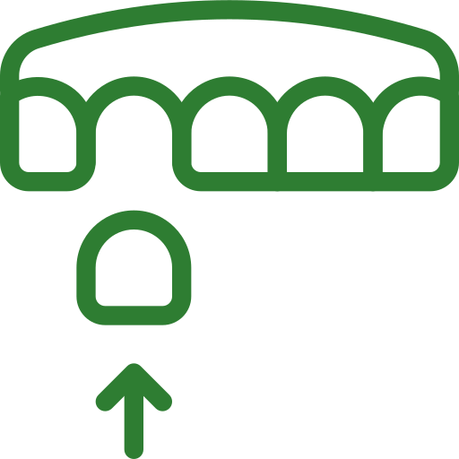
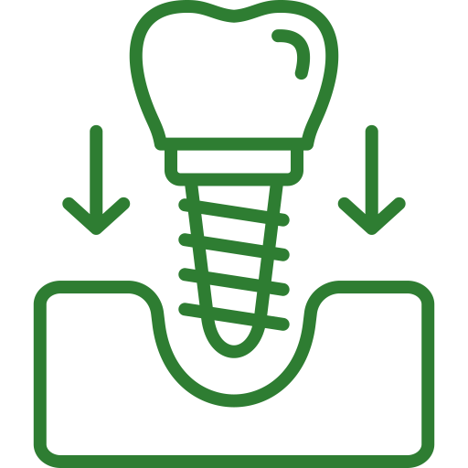

Naprawa protez zębowych – Poznań
Nie martw się, to częsty problem, który rozwiązujemy od ręki. Większość napraw wykonujemy na miejscu w ciągu 15-30 minut, przywracając pełen komfort i funkcjonalność Twojej protezy.
ZADZWOŃ TERAZ - POMOC OD RĘKIWiększość napraw wykonujemy od ręki
Zakres naszych usług naprawczych

Sklejenie pękniętej lub złamanej protezy
Precyzyjnie i trwale łączymy uszkodzone elementy protezy, przywracając jej pierwotną wytrzymałość.

Dostawienie zęba lub klamry
Uzupełniamy brakujące zęby lub elementy mocujące, które uległy uszkodzeniu lub wypadły.
Wzmocnienie protezy specjalną siatka
W przypadku częstych pęknięć, możemy wzmocnić konstrukcję protezy, znacznie zwiększając jej odporność.
Podścielenie (uszczelnienie) protezy
Poprawiamy dopasowanie luźnej protezy, aby znów idealnie przylegała i nie sprawiała problemów.
Dlaczego nasza pomoc jest tak szybka i skuteczna?
Bez pośredników
Nie wysyłamy prac do zewnętrznych laboratoriów. Uszkodzona proteza trafia prosto w ręce specjalisty, który natychmiast przystępuje do pracy.
Pełna kontrola i jakość
Osobiście nadzorujemy każdy etap naprawy, używając sprawdzonych, certyfikowanych materiałów, co gwarantuje trwałość wykonanej usługi.
Doświadczenie
Ponad 20 lat praktyki pozwala nam błyskawicznie diagnozować problem i stosować najskuteczniejsze metody naprawcze.

Co zrobić, gdy Twoja proteza ulegnie uszkodzeniu?
Nie próbuj samodzielnej naprawy!
Nigdy nie używaj klejów typu "super glue". Są toksyczne i mogą uniemożliwić profesjonalną naprawę.
Zabezpiecz wszystkie elementy
Zbierz wszystkie fragmenty protezy, abyśmy mogli precyzyjnie ją zrekonstruować.
Zadzwoń do nas i przyjedź
Skontaktuj się z nami, aby uprzedzić o swoim przybyciu. Czekamy na Ciebie w naszej pracowni w Poznaniu.
Nie czekaj - odzyskaj komfort jeszcze dzisiaj!
Większość napraw wykonujemy od ręki. Zadzwoń i przyjedź do naszej pracowni.
Bukowska 45, Poznań
Górna Wilda 82, Poznań
Bukowska 45: pn, śr, czw 15:00-16:00
Górna Wilda 82: pn, śr, pt 10:00-11:00